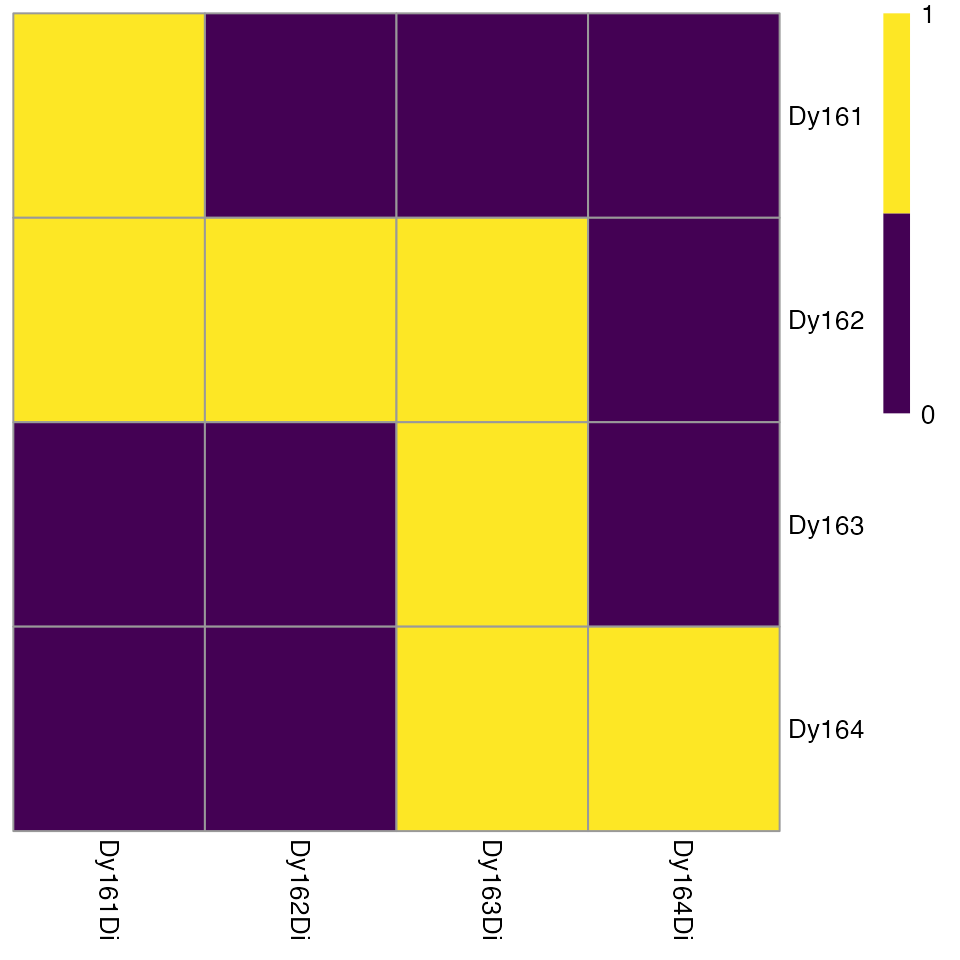
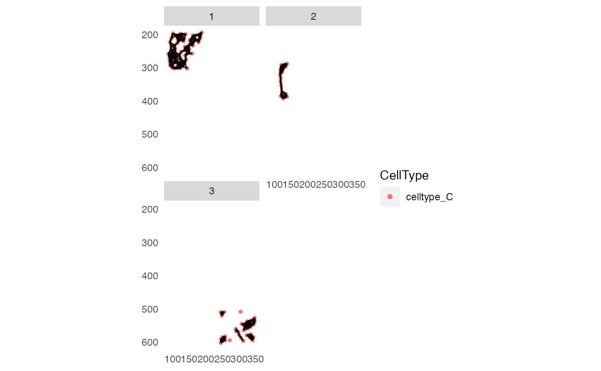
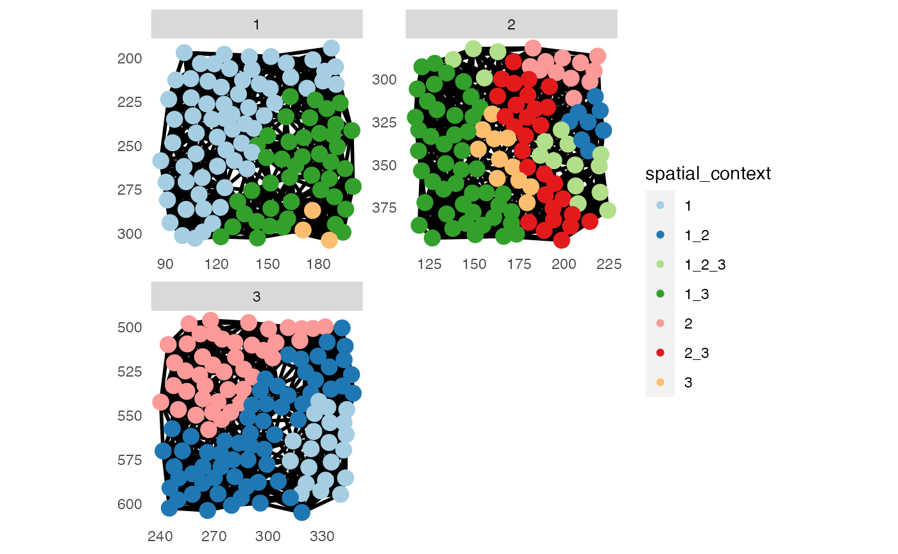
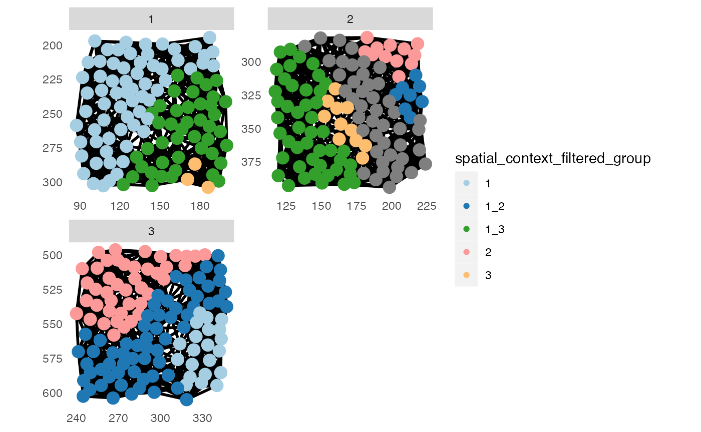
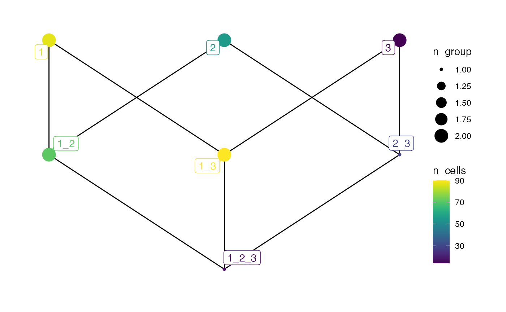
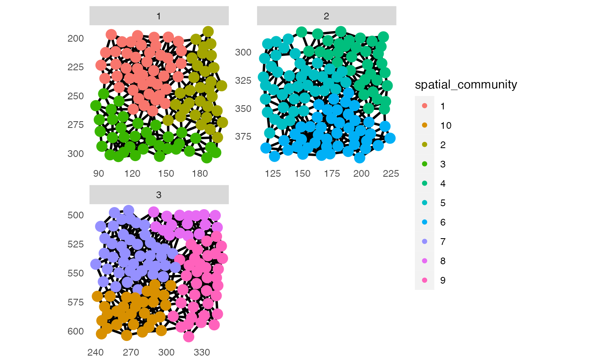
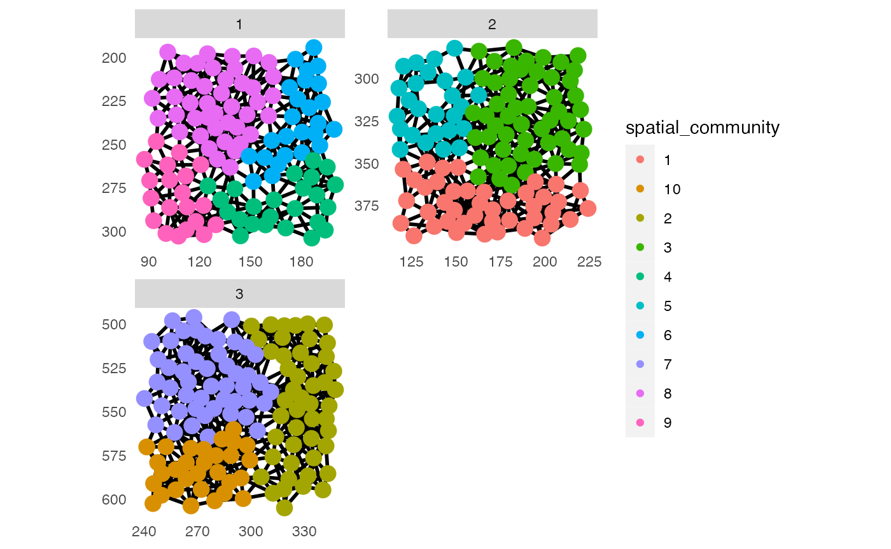
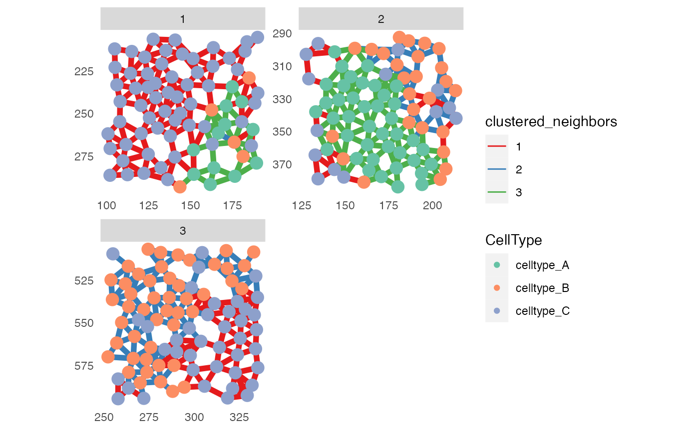
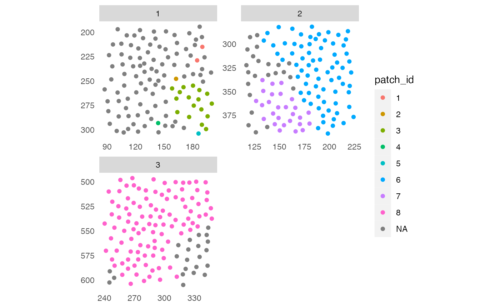

Tools for IMC data analysis
Nils Eling
Department for Quantitative Biomedicine, University of ZurichInstitute for Molecular Health Sciences, ETH Zurichnils.eling@dqbm.uzh.ch
Lasse Meyer
Department for Quantitative Biomedicine, University of ZurichInstitute for Molecular Health Sciences, ETH Zurichlasse.meyer@(uzh.ch?)
Daniel Schulz
Department for Quantitative Biomedicine, University of ZurichInstitute for Molecular Health Sciences, ETH Zurichdaniel.schulz@(uzh.ch?)
20 November 2023
Source:vignettes/imcRtools.Rmd
imcRtools.RmdAbstract
This R package supports the handling and analysis of imaging mass cytometry and other highly multiplexed imaging data. The main functionality includes reading in single-cell data after image segmentation and measurement, data formatting to perform channel spillover correction and a number of spatial analysis approaches. First, cell-cell interactions are detected via spatial graph construction; these graphs can be visualized with cells representing nodes and interactions representing edges. Furthermore, per cell, its direct neighbours are summarized to allow spatial clustering. Per image/grouping level, interactions between types of cells are counted, averaged and compared against random permutations. In that way, types of cells that interact more (attraction) or less (avoidance) frequently than expected by chance are detected.
Introduction
This vignette gives an introduction to handling and analyzing imaging
mass cytometry (IMC) and other highly-multiplexed imaging data in R. The
imcRtools package relies on expression and morphological
features extracted from multi-channel images using corresponding
segmentation masks. A description of data types and segmentation
approaches can be found below (data types, segmentation). However, due to shared data
structures, the functionalities of the imcRtools package
are applicable to most highly multiplexed imaging modalities.
Overview
The imcRtools package exports functions and example data
to perform the following analyses:
- Read in pre-processed data
- Perform spillover correction for IMC data
- Build and visualize spatial graphs
- Aggregate across neighbouring cells for spatial clustering
- Detect spatial patches of similar cell-types
- Test the attraction or avoidance between celltypes
To highlight the usability of these function, the
imcRtools package also exports a number of test data files.
Highly multiplexed imaging
Highly multiplexed imaging techniques (Bodenmiller 2016) such as imaging mass
cytometry (IMC) (Giesen et al. 2014),
multiplexed ion beam imaging (MIBI) (Angelo et
al. 2014) and cyclic immunofluorescence techniques Gut, Herrmann, and Pelkmans (2018) acquire
read-outs of the expression of tens of protein in a spatially resolved
manner. After technology-dependent data pre-processing, the raw data
files are comparable: multi-channel images for the dimensions
x, y, and c, where x
and y define the number of pixels (x * y) per
image and c the number of proteins (also refered to as
“markers”) measured per image. More info on the data types and further
pre-processing can be found below.
Increased multiplexity compared to epitope-based techniques is achieved using single-cell resolved spatial transcriptomics techniques including MERFISH (Chen et al. 2015) and seqFISH (Lubeck et al. 2014). However, data produced by these techniques required different pre-processing steps. Nevertheless, analysis performed on the single-cell level is equally applicable.
Imaging mass cytometry
IMC (Giesen et al. 2014) is a highly multiplexed imaging approach to measure spatial protein abundance. In IMC, tissue sections on slides are stained with a mix of around 40 metal-conjugated antibodies prior to laser ablation with \(1\mu{}m\) resolution. The ablated material is transferred to a mass cytometer for time-of-flight detection of the metal ions (Giesen et al. 2014). At an ablation frequency of 200Hz, a 1mm x 1mm region can be acquired within 1.5 hours.
Data types
In the case of IMC, the raw data output are .mcd files containing all acquired regions per slide. During image pre-prcoessing these files are converted into individual multi-channel .tiff and OME-TIFF files. These file formats are supported by most open-source and commercial image analysis software, such as Fiji, QuPath or napari.
In R, these .tiff files can be read into individual Image objects or combined into a CytoImageList object supported by the cytomapper package.
Segmentation and feature extraction
The pixel resolution of most highly multiplexed imaging technologies including IMC support the detection of cellular structures. Therefore, a common processing step using multi-channel images is object segmentation. In this vignette, objects are defined as cells; however, also larger scale structures could be segmented.
There are multiple different image segmentation approaches available.
However, imcRtools only supports direct reader functions
for two segmentation strategies developed for highly multiplexed imaging
technologies:
The ImcSegmentationPipeline has been developed to give the user flexibility in how to perform channel selection and image segmentation. The underlying principle is to train a pixel classifier (using ilastik) on a number of selected channels to perform probabilistic classification of each pixel into: background, cytoplasm and nucleus. Based on these classification probabilities a CellProfiler pipeline performs cell segmentation and feature extraction.
A containerized version of this pipeline is implemented in steinbock.
steinbockfurther supports segmentation via the use ofMesmerfrom theDeepCelllibrary (Greenwald et al. 2021).
While the output of both approaches is structured differently, the exported features are comparable:
- per cell: channel intensity, morphology and location
- cell-cell interactions exported as graph
By combining these with availabel channel information, the data can be read into a SpatialExperiment or SingleCellExperiment object (see below).
Example data
The imcRtools package contains a number of example data
generated by the Hyperion imaging system for different purposes. The
following section gives an overview of these files.
For spillover correction
To highlight the use of the imcRtools package for
spillover correction, we provide four .txt files containing pixel
intensities of four spotted metals.
Please refer to the spillover correction section for full details.
These files are accessible via:
path <- system.file("extdata/spillover", package = "imcRtools")
list.files(path, recursive = TRUE)## [1] "Dy161.txt" "Dy162.txt" "Dy163.txt" "Dy164.txt"Raw data in form of .txt files
IMC generates .mcd files storing the raw data or all acquired regions of interest (ROI). In addition, the raw pixel values are also stored in individual .txt files per ROI.
To highlight reading in raw data in form of .txt files, the
imcRtools contains 3 sample acquisitions:
txt_files <- list.files(system.file("extdata/mockData/raw",
package = "imcRtools"))
txt_files## [1] "20210305_NE_mockData2_ROI_001_1.txt" "20210305_NE_mockData2_ROI_002_2.txt"
## [3] "20210305_NE_mockData2_ROI_003_3.txt"ImcSegmentationPipeline output data
IMC data preprocessing and segmentation can be performed using the ImcSegmentationPipeline.
It generates a number of .csv files containing
object/cell-specific and image-specific metadata.
The imcRtools package exports the
read_cpout function as convenient reader function for
outputs generated by the ImcSegmentationPipeline. For
demonstration purposes, imcRtools contains the output of
running the pipeline on a small example dataset:
path <- system.file("extdata/mockData/cpout", package = "imcRtools")
list.files(path, recursive = TRUE)## [1] "cell.csv" "Experiment.csv"
## [3] "Image.csv" "Object_relationships.csv"
## [5] "panel.csv" "var_cell.csv"
## [7] "var_Image.csv"steinbock output data
The steinbock pipeline can be used to process, segment and extract features from IMC data. For more information, please refer to its documentation.
To highlight the functionality of imcRtools to read in
single-cell data generated by steinbock, we provide a small
toy dataset available at:
path <- system.file("extdata/mockData/steinbock", package = "imcRtools")
list.files(path, recursive = TRUE)## [1] "images.csv"
## [2] "intensities/20210305_NE_mockData1_001.csv"
## [3] "intensities/20210305_NE_mockData1_002.csv"
## [4] "intensities/20210305_NE_mockData1_003.csv"
## [5] "intensities/20210305_NE_mockData2_001.csv"
## [6] "intensities/20210305_NE_mockData2_002.csv"
## [7] "intensities/20210305_NE_mockData2_003.csv"
## [8] "intensities/20210305_NE_mockData3_001.csv"
## [9] "intensities/20210305_NE_mockData3_002.csv"
## [10] "intensities/20210305_NE_mockData3_003.csv"
## [11] "intensities/20210305_NE_mockData4_001.csv"
## [12] "intensities/20210305_NE_mockData4_002.csv"
## [13] "intensities/20210305_NE_mockData4_003.csv"
## [14] "intensities/20210305_NE_mockData5_001.csv"
## [15] "intensities/20210305_NE_mockData5_002.csv"
## [16] "intensities/20210305_NE_mockData5_003.csv"
## [17] "neighbors/20210305_NE_mockData1_001.csv"
## [18] "neighbors/20210305_NE_mockData1_002.csv"
## [19] "neighbors/20210305_NE_mockData1_003.csv"
## [20] "neighbors/20210305_NE_mockData2_001.csv"
## [21] "neighbors/20210305_NE_mockData2_002.csv"
## [22] "neighbors/20210305_NE_mockData2_003.csv"
## [23] "neighbors/20210305_NE_mockData3_001.csv"
## [24] "neighbors/20210305_NE_mockData3_002.csv"
## [25] "neighbors/20210305_NE_mockData3_003.csv"
## [26] "neighbors/20210305_NE_mockData4_001.csv"
## [27] "neighbors/20210305_NE_mockData4_002.csv"
## [28] "neighbors/20210305_NE_mockData4_003.csv"
## [29] "neighbors/20210305_NE_mockData5_001.csv"
## [30] "neighbors/20210305_NE_mockData5_002.csv"
## [31] "neighbors/20210305_NE_mockData5_003.csv"
## [32] "panel.csv"
## [33] "regionprops/20210305_NE_mockData1_001.csv"
## [34] "regionprops/20210305_NE_mockData1_002.csv"
## [35] "regionprops/20210305_NE_mockData1_003.csv"
## [36] "regionprops/20210305_NE_mockData2_001.csv"
## [37] "regionprops/20210305_NE_mockData2_002.csv"
## [38] "regionprops/20210305_NE_mockData2_003.csv"
## [39] "regionprops/20210305_NE_mockData3_001.csv"
## [40] "regionprops/20210305_NE_mockData3_002.csv"
## [41] "regionprops/20210305_NE_mockData3_003.csv"
## [42] "regionprops/20210305_NE_mockData4_001.csv"
## [43] "regionprops/20210305_NE_mockData4_002.csv"
## [44] "regionprops/20210305_NE_mockData4_003.csv"
## [45] "regionprops/20210305_NE_mockData5_001.csv"
## [46] "regionprops/20210305_NE_mockData5_002.csv"
## [47] "regionprops/20210305_NE_mockData5_003.csv"
## [48] "steinbock.sh"The example data related to the ImcSegmentationPipeline
and steinbock can also be accessed online.
Read in IMC data
The imcRtools package supports reading in data generated
by the ImcSegmentationPipeline
or steinbock
pipeline.
To read in the outpout data into a SpatialExperiment
or SingleCellExperiment,
the imcRtools package exports the read_cpout
function.
By default, the single-cell data is read into a SpatialExperiment
object. Here, the extracted channel- and cell-specific intensities are
stored in the counts(spe) slot. All morphological features
are stored in colData(spe) and the spatial locations of the
cells are stored in spatialCoords(spe). The interaction
graph is stored in colPair(spe, "neighbourhood").
Alternatively, the data can be read into a SingleCellExperiment
object. The only difference is the lack of
spatialCoords(sce). Here, the spatial coordinates are
stored in colData(spe)$Pos_X and
colData(spe)$Pos_Y.
Read in CellProfiler output
The ImcSegmentationPipeline
produces a number of output files. By default, all single-cell features
are measured and exported. To browse and select the features of
interest, the imcRtools package provides the
show_cpout_features function:
path <- system.file("extdata/mockData/cpout", package = "imcRtools")
show_cpout_features(path)By default, read_cpout will read in the mean intensity
per channel and cell from “hot pixel” filtered image stacks specified
via
intensities = "Intensity_MeanIntensity_FullStackFiltered".
Please refer to ?read_cpout for the full documentation.
cur_path <- system.file("extdata/mockData/cpout", package = "imcRtools")
# Read as SpatialExperiment
(spe <- read_cpout(cur_path, graph_file = "Object_relationships.csv"))## class: SpatialExperiment
## dim: 5 239
## metadata(0):
## assays(1): counts
## rownames(5): Ag107 Pr141 Sm147 Eu153 Yb172
## rowData names(7): Tube.Number Metal.Tag ... deepcell cellpose
## colnames: NULL
## colData names(12): sample_id ObjectNumber ... Metadata_acid
## Metadata_description
## reducedDimNames(0):
## mainExpName: NULL
## altExpNames(0):
## spatialCoords names(2) : Pos_X Pos_Y
## imgData names(1): sample_id
# Read as SingleCellExperiment
(sce <- read_cpout(cur_path, graph_file = "Object_relationships.csv",
return_as = "sce"))## class: SingleCellExperiment
## dim: 5 239
## metadata(0):
## assays(1): counts
## rownames(5): Ag107 Pr141 Sm147 Eu153 Yb172
## rowData names(7): Tube.Number Metal.Tag ... deepcell cellpose
## colnames: NULL
## colData names(14): sample_id ObjectNumber ... Metadata_acid
## Metadata_description
## reducedDimNames(0):
## mainExpName: NULL
## altExpNames(0):Read in steinbock output
Single-cell data and all associated metadata (e.g. spatial location,
morphology and interaction graphs) as produced by the steinbock
pipeline can be read in using the read_steinbock
function:
cur_path <- system.file("extdata/mockData/steinbock", package = "imcRtools")
# Read as SpatialExperiment
(spe <- read_steinbock(cur_path))## class: SpatialExperiment
## dim: 5 404
## metadata(0):
## assays(1): counts
## rownames(5): Ag107 Cytokeratin 5 Laminin YBX1 H3K27Ac
## rowData names(7): channel name ... cellpose Tube.Number
## colnames: NULL
## colData names(8): sample_id ObjectNumber ... width_px height_px
## reducedDimNames(0):
## mainExpName: NULL
## altExpNames(0):
## spatialCoords names(2) : Pos_X Pos_Y
## imgData names(1): sample_id
# Read as SingleCellExperiment
(sce <- read_steinbock(cur_path, return_as = "sce"))## class: SingleCellExperiment
## dim: 5 404
## metadata(0):
## assays(1): counts
## rownames(5): Ag107 Cytokeratin 5 Laminin YBX1 H3K27Ac
## rowData names(7): channel name ... cellpose Tube.Number
## colnames: NULL
## colData names(10): sample_id ObjectNumber ... width_px height_px
## reducedDimNames(0):
## mainExpName: NULL
## altExpNames(0):For more information, please refer to
?read_steinbock.
Read raw .txt files into Image objects
For reading in and visualization of multi-channel images and
segmentation masks, please refer to the cytomapper
package. The imcRtools package however supports reading in
raw .txt files generated by the Hyperion imaging system into a
CytoImageList object; a data container exported by
cytomapper.
The user needs to provide a path from which all .txt files will be read in:
path <- system.file("extdata/mockData/raw", package = "imcRtools")
cur_CytoImageList <- readImagefromTXT(path)
cur_CytoImageList## CytoImageList containing 3 image(s)
## names(3): 20210305_NE_mockData2_ROI_001_1 20210305_NE_mockData2_ROI_002_2 20210305_NE_mockData2_ROI_003_3
## Each image contains 5 channel(s)
## channelNames(5): Ag107Di Pr141Di Sm147Di Eu153Di Yb172DiBy specifying the pattern argument, individual or a
subset of files can be read in. For more information, please refer to
?readImagefromTXT.
Spillover correction
When acquiring IMC images, pixel intensities can be influenced by spillover from neighboring channels. To correct for this, Chevrier et al. have developed a staining protocol to acquire individually spotted metal isotopes (Chevrier et al. 2017). Based on these measurements, spillover into neighboring channels can be quantified to correct pixel intensities.
The imcRtools package provides helper functions that
facilitate the correction of spillover for IMC data. For a full
tutorial, please refer to the IMC
data analysis book.
Read in the single-spot acquisitions
In the first step, the pixel intensities of individually spotted
metals need to be read into a SingleCellExperiment
container for downstream use with the CATALYST
package. For this, the readSCEfromTXT function can be
used:
path <- system.file("extdata/spillover", package = "imcRtools")
sce <- readSCEfromTXT(path) ## Spotted channels: Dy161, Dy162, Dy163, Dy164
## Acquired channels: Dy161, Dy162, Dy163, Dy164
## Channels spotted but not acquired:
## Channels acquired but not spotted:
sce## class: SingleCellExperiment
## dim: 4 400
## metadata(0):
## assays(1): counts
## rownames(4): 161Dy(Dy161Di) 162Dy(Dy162Di) 163Dy(Dy163Di)
## 164Dy(Dy164Di)
## rowData names(2): channel_name marker_name
## colnames(400): Dy161.1 Dy161.2 ... Dy164.99 Dy164.100
## colData names(9): Start_push End_push ... sample_metal sample_mass
## reducedDimNames(0):
## mainExpName: NULL
## altExpNames(0):Here, the example metal spot files are read in. The spot information
are stored in the colData(sce) slot and channel information
are stored in rowData(sce). Each column represents a single
pixel.
Quality control on single-spot acquisitions
In the next step, it is crucial to identify potentially mislabeled
spots or spots with low pixel intensities. The imcRtools
package exports the plotSpotHeatmap function, which
visualizes the aggregated (default median) pixel
intensities per spot and per metal:
plotSpotHeatmap(sce)
Here, high median pixel intensities can be observed in each spot and
their corresponding channels (visualized on the log10 scale
by default). To quickly identify spot/channel combinations with low
signal, the threshold parameter can be set:
plotSpotHeatmap(sce, log = FALSE, threshold = 200)
Consecutive pixel binning
If pixel intensities are low, spillover estimation might not be
robust. Therefore, the binAcrossPixels function can be used
to sum consecutive pixels and enhance the acquired signal. This step is
optional for spillover estimation.
sce2 <- binAcrossPixels(sce, bin_size = 5)
plotSpotHeatmap(sce2, log = FALSE, threshold = 200)
Pixel filtering
Prior to spillover estimation, the CATALYST
package provides the assignPrelim, estCutoffs
and applyCutoffs functions to estimate the spotted mass for
each pixel based on their channel intensities. For more information on
the spillover estimation and correction, please refer to the CATALYST
vignette.
This estimation can be used to identify pixels that cannot be easily
assigned to their spotted mass, potentially indicating pixels with weak
signal. To remove these pixels, the filterPixels function
can be used. This function further removes pixels assigned to masses,
which only contain very few pixels.
library(CATALYST)
bc_key <- as.numeric(unique(sce$sample_mass))
assay(sce, "exprs") <- asinh(counts(sce)/5)
sce <- assignPrelim(sce, bc_key = bc_key)
sce <- estCutoffs(sce)
sce <- applyCutoffs(sce)
# Filter out mislabeled pixels
sce <- filterPixels(sce)
table(sce$bc_id, sce$sample_mass)##
## 161 162 163 164
## 0 0 0 0 2
## 161 100 0 0 0
## 162 0 100 0 0
## 163 0 0 100 0
## 164 0 0 0 98Estimating the spillover matrix
Finally, the pre-processed SiingleCellExperiment object
can be used to generate the spillover matrix using the
CATALYST::computeSpillmat function:
sce <- computeSpillmat(sce)
metadata(sce)$spillover_matrix## Dy161Di Dy162Di Dy163Di Dy164Di
## Dy161Di 1.000000000 0.031443129 0.009734712 0.006518048
## Dy162Di 0.015715159 1.000000000 0.048116187 0.008250039
## Dy163Di 0.003809504 0.012159704 1.000000000 0.020214651
## Dy164Di 0.005058069 0.008457546 0.028912343 1.000000000This spillover matrix can be directly applied to compensate the summarized pixel intensities per cell and per channel as described here.
Spatial analysis
The following section will highlight functions for spatial analyses of the data.
Constructing graphs
When following the ImcSegmentationPipeline or
steinbock and reading in the data using the corresponding
functions, the generated graphs are automatically stored in the
colPair(spe, "neighborhood") slot. Alternatively, the
buildSpatialGraph function in the imcRtools
package constructs interaction graphs using either (i) cell-centroid
expansion, (ii) k-nearest neighbor search or (iii) delaunay
triangulation.
library(cytomapper)
data("pancreasSCE")
pancreasSCE <- buildSpatialGraph(pancreasSCE, img_id = "ImageNb",
type = "expansion",
threshold = 20)
pancreasSCE <- buildSpatialGraph(pancreasSCE, img_id = "ImageNb",
type = "knn",
k = 5)
pancreasSCE <- buildSpatialGraph(pancreasSCE, img_id = "ImageNb",
type = "delaunay")
colPairNames(pancreasSCE)## [1] "expansion_interaction_graph" "knn_interaction_graph"
## [3] "delaunay_interaction_graph"When setting type = "knn", by default a directional
graph will be build. Setting directed = FALSE will create
bi-directional edges for each pair of cells that are connected by at
least one edge in the directed setting.
Graph/cell visualization
The cells’ locations and constructed graphs can be visualized using
the plotSpatial function. Here, cells are referred to as
“nodes” and cell-cell interactions are referred to as “edges”. All
visual attributes of the nodes and edges can be set. Either by
specifying a variable in colData(spe), a marker name or a
single entry using the *_fix parameters. By default the
plotSpatial function will visualize equal physical units on
the x- and y-axis with an aspect ratio of 1. The example data are
located in different regions of an image and we therefore set
scales = "free" for simpler visualization.
library(ggplot2)
library(ggraph)
plotSpatial(pancreasSCE,
img_id = "ImageNb",
node_color_by = "CellType",
node_shape_by = "ImageNb",
node_size_by = "Area",
draw_edges = TRUE,
colPairName = "knn_interaction_graph",
directed = FALSE,
scales = "free")
# Colored by expression and with arrows
plotSpatial(pancreasSCE,
img_id = "ImageNb",
node_color_by = "PIN",
assay_type = "exprs",
node_size_fix = 3,
edge_width_fix = 0.2,
draw_edges = TRUE,
colPairName = "knn_interaction_graph",
directed = TRUE,
arrow = grid::arrow(length = grid::unit(0.1, "inch")),
end_cap = ggraph::circle(0.05, "cm"),
scales = "free")
# Subsetting the SingleCellExperiment
plotSpatial(pancreasSCE[,pancreasSCE$Pattern],
img_id = "ImageNb",
node_color_by = "CellType",
node_size_fix = 1,
draw_edges = TRUE,
colPairName = "knn_interaction_graph",
directed = TRUE) 
The returned object can be further modified using the
ggplot2 logic. This includes changing the node color, shape
and size using scale_color_*, scale_shape_*
and scale_size_*. Edge attributes can be altered using the
scale_edge_* function exported by ggraph,
Neighborhood aggregation
The aggregateNeighbors function can be used to aggregate
features of all neighboring cells for each individual cell. This
function operates in two settings.
-
metadata: when aggregating by cell-specific metadata, the function computes the relative frequencies of all entries tocolData(sce)[[count_by]]within the direct neighborhood of each cell.
-
expression: the expression counts of neighboring cells are aggregated using the specifiedstatistic(defaults tomean).
Each cell’s neighborhood is defined as endpoints of edges stored in
colPair(sce, colPairName).
pancreasSCE <- aggregateNeighbors(pancreasSCE,
colPairName = "knn_interaction_graph",
aggregate_by = "metadata",
count_by = "CellType")
head(pancreasSCE$aggregatedNeighbors)## DataFrame with 6 rows and 3 columns
## celltype_A celltype_B celltype_C
## <numeric> <numeric> <numeric>
## 1 0 0.0 1.0
## 2 0 0.2 0.8
## 3 0 0.0 1.0
## 4 0 0.0 1.0
## 5 0 0.0 1.0
## 6 0 0.0 1.0
pancreasSCE <- aggregateNeighbors(pancreasSCE,
colPairName = "knn_interaction_graph",
aggregate_by = "expression",
assay_type = "exprs")
head(pancreasSCE$mean_aggregatedExpression)## DataFrame with 6 rows and 5 columns
## H3 CD99 PIN CD8a CDH
## <numeric> <numeric> <numeric> <numeric> <numeric>
## 1 2.32500 0.860329 0.092871 0.725000 2.51264
## 2 2.88022 1.629762 0.319527 0.207873 2.46486
## 3 3.10829 0.735389 0.190616 0.255515 1.89484
## 4 2.55842 0.773342 0.124545 0.188629 2.51084
## 5 2.44287 1.126240 0.252129 0.200261 2.61336
## 6 2.65059 0.903869 0.181792 0.196691 2.16434The returned entries can now be used for clustering to group cells based on their environment (either by aggregated categorical features or expression).
set.seed(22)
cur_cluster <- kmeans(pancreasSCE$aggregatedNeighbors, centers = 3)
pancreasSCE$clustered_neighbors <- factor(cur_cluster$cluster)
# Visualize CellType and clustered_neighbors
plotSpatial(pancreasSCE,
img_id = "ImageNb",
node_color_by = "CellType",
node_size_fix = 4,
edge_width_fix = 2,
edge_color_by = "clustered_neighbors",
draw_edges = TRUE,
colPairName = "knn_interaction_graph",
directed = FALSE,
nodes_first = FALSE,
scales = "free") +
scale_color_brewer(palette = "Set2") +
scale_edge_color_brewer(palette = "Set1")
# Visualize clustered_neighbors
plotSpatial(pancreasSCE,
img_id = "ImageNb",
node_color_by = "clustered_neighbors",
node_size_fix = 4,
edge_width_fix = 1,
draw_edges = TRUE,
colPairName = "knn_interaction_graph",
directed = FALSE,
nodes_first = FALSE,
scales = "free")+
scale_color_brewer(palette = "Set1")Spatial context analysis
The single cell assignments derived from clustering cells based on their environment can be interpreted as cellular neighborhoods (CNs), which can represent sites of unique local processes (Schürch et al. 2020).
Downstream of CNs, imcRtools exports three functions to detect and analyze the spatial context (SC) of each cell.
-
detectSpatialContext: for the function to detect SCs -
filterSpatialContext: for the function to filter SCs -
plotSpatialContext: for the function to plot SC graphs
The term SC was coined by Bhate and colleagues (Bhate et al. 2022) and describes tissue regions in which distinct CNs may be interacting, which can lead to specialized local biological events.
The detectSpatialContext function relies on CN fractions
for each cell in a spatial interaction graph (originally a k-nearest
neighbor (KNN) graph).
We can retrieve the CN fractions using the above-described
buildSpatialGraph and aggregateNeighbors
functions. The window size (k for KNN) for
buildSpatialGraph should reflect a length scale on which
biological signals can be exchanged and depends, among others, on cell
density and tissue area. In view of their divergent functionality, we
recommend to use a larger window size for SC (interaction between local
processes) than for CN (local processes) detection.
Subsequently, the CN fractions are sorted from high-to-low and the SC of each cell is assigned the minimal combination of SCs that additively surpass a user-defined threshold. The default threshold of 0.9 aims to represent the dominant CNs, hence the most prevalent signals, in a given window.
For more details, please refer to (Bhate et al. 2022).
# Generate k-nearest neighbor graph
pancreasSCE <- buildSpatialGraph(pancreasSCE, img_id = "ImageNb",
type = "knn",
name = "knn_spatialcontext_graph",
k = 15)
colPairNames(pancreasSCE)## [1] "expansion_interaction_graph" "knn_interaction_graph"
## [3] "delaunay_interaction_graph" "knn_spatialcontext_graph"
# Aggregate based on clustered_neighbors
pancreasSCE <- aggregateNeighbors(pancreasSCE,
colPairName = "knn_spatialcontext_graph",
aggregate_by = "metadata",
count_by = "clustered_neighbors",
name = "aggregatedNeighborhood")
# Detect spatial contexts
pancreasSCE <- detectSpatialContext(pancreasSCE,
entry = "aggregatedNeighborhood",
threshold = 0.9,
name = "spatial_context")
# Define SC color scheme
col_SC <- setNames(c("#A6CEE3", "#1F78B4", "#B2DF8A", "#33A02C", "#FB9A99", "#E31A1C", "#FDBF6F"),
sort(unique(pancreasSCE$spatial_context)))
# Visualize spatial contexts on images
plotSpatial(pancreasSCE,
img_id = "ImageNb",
node_color_by = "spatial_context",
node_size_fix = 4,
edge_width_fix = 1,
draw_edges = TRUE,
colPairName = "knn_spatialcontext_graph",
directed = FALSE,
nodes_first = FALSE,
scales = "free") +
scale_color_manual(values = col_SC)
After SC assignment for each individual cell, the
filterSpatialContext function allows to filter detected SCs
based on user-defined thresholds for number of group entries (usually
image or patient ID) and/or total number of cells per SC.
In addition to a new column entry to the
colData(object), the function also returns a
data.frame entry to metadata(object)
containing filtered group and cell counts per SC.
# Filter spatial contexts
# By number of group entries
pancreasSCE <- filterSpatialContext(pancreasSCE,
entry = "spatial_context",
group_by = "ImageNb",
group_threshold = 2,
name = "spatial_context_filtered_group")
metadata(pancreasSCE)$filterSpatialContext## spatial_context n_cells n_group
## 1 1 87 2
## 2 1_2 71 2
## 4 1_3 90 2
## 5 2 55 2
## 7 3 14 2
plotSpatial(pancreasSCE,
img_id = "ImageNb",
node_color_by = "spatial_context_filtered_group",
node_size_fix = 4,
edge_width_fix = 1,
draw_edges = TRUE,
colPairName = "knn_spatialcontext_graph",
directed = FALSE,
nodes_first = FALSE,
scales = "free") +
scale_color_manual(values = col_SC)
# By total number of cells
pancreasSCE <- filterSpatialContext(pancreasSCE,
entry = "spatial_context",
group_by = "ImageNb",
cells_threshold = 15,
name = "spatial_context_filtered_cells")
metadata(pancreasSCE)$filterSpatialContext## spatial_context n_cells n_group
## 1 1 87 2
## 2 1_2 71 2
## 3 1_2_3 16 1
## 4 1_3 90 2
## 5 2 55 2
## 6 2_3 29 1
plotSpatial(pancreasSCE,
img_id = "ImageNb",
node_color_by = "spatial_context_filtered_cells",
node_size_fix = 4,
edge_width_fix = 1,
draw_edges = TRUE,
colPairName = "knn_spatialcontext_graph",
directed = FALSE,
nodes_first = FALSE,
scales = "free") +
scale_color_manual(values = col_SC)Lastly, the plotSpatialContext function plots directed
SC graphs, akin to CN combination maps in (Bhate et al. 2022), based on symbolic
edge-lists and vertex metadata, which operates on cohort-level.
## Plot spatial context graph
# Default
plotSpatialContext(pancreasSCE,
entry = "spatial_context",
group_by = "ImageNb")
# Colored by name and size by n_cells
plotSpatialContext(pancreasSCE,
entry = "spatial_context",
group_by = "ImageNb",
node_color_by = "name",
node_size_by = "n_cells",
node_label_color_by = "name")
# Colored by n_cells and size by n_group
plotSpatialContext(pancreasSCE,
entry = "spatial_context",
group_by = "ImageNb",
node_color_by = "n_cells",
node_size_by = "n_group",
node_label_color_by = "n_cells")+
scale_color_viridis()
The returned object can be further modified using the
ggplot2 logic. This includes changing the node color and
size using scale_color_* and scale_size_*.
Edge attributes can be altered using the scale_edge_*
function exported by ggraph.
Furthermore, setting return_data = TRUE returns the
symbolic edge-list and vertex metadata used for graph construction in a
list of two data.frames.
# Return data
plotSpatialContext(pancreasSCE,
entry = "spatial_context",
group_by = "ImageNb",
return_data = TRUE)## $edges
## from to
## 1 1 1_2
## 2 1 1_3
## 3 1_2 1_2_3
## 4 1_3 1_2_3
## 5 2 1_2
## 6 2 2_3
## 7 2_3 1_2_3
## 8 3 1_3
## 9 3 2_3
##
## $vertices
## spatial_context n_cells n_group length
## 1 1 87 2 1
## 2 1_2 71 2 2
## 3 1_2_3 16 1 3
## 4 1_3 90 2 2
## 5 2 55 2 1
## 6 2_3 29 1 2
## 7 3 14 2 1Community detection
In addition to cellular neighborhood and spatial context analysis,
imcRtools exports the detectCommunity function
to detect the spatial community of each cell as proposed by (Jackson et al. 2020). Here, each cell is
clustered based on its interactions as defined by a spatial object
graph.
In more detail, the spatial community detection procedure is as follows:
Create an igraph object from the edge list stored in .
Perform community detection using the specified algorithm (defaults to “louvain”).
Store the community IDs in a vector and replace all communities with a size smaller than by NA.
## Detect spatial community
set.seed(22)
pancreasSCE <- detectCommunity(pancreasSCE,
colPairName = "expansion_interaction_graph")
plotSpatial(pancreasSCE,
img_id = "ImageNb",
node_color_by = "spatial_community",
node_size_fix = 4,
edge_width_fix = 1,
draw_edges = TRUE,
colPairName = "expansion_interaction_graph",
directed = FALSE,
nodes_first = FALSE,
scales = "free")
## Detect spatial community - specify size_threshold
set.seed(22)
pancreasSCE <- detectCommunity(pancreasSCE,
colPairName = "expansion_interaction_graph",
size_threshold = 20)
plotSpatial(pancreasSCE,
img_id = "ImageNb",
node_color_by = "spatial_community",
node_size_fix = 4,
edge_width_fix = 1,
draw_edges = TRUE,
colPairName = "expansion_interaction_graph",
directed = FALSE,
nodes_first = FALSE,
scales = "free")
It is also possible to use different community detection algorithms from
the igraphpackage.
## Detect spatial community - walktrap community detection
set.seed(22)
pancreasSCE <- detectCommunity(pancreasSCE,
colPairName = "expansion_interaction_graph",
cluster_fun = "walktrap")
plotSpatial(pancreasSCE,
img_id = "ImageNb",
node_color_by = "spatial_community",
node_size_fix = 4,
edge_width_fix = 1,
draw_edges = TRUE,
colPairName = "expansion_interaction_graph",
directed = FALSE,
nodes_first = FALSE,
scales = "free")
Moreover, the user can specify to perform spatial community detection separately for all unique entries to e.g. for tumor and non-tumor cells.
## Detect spatial community - specify group_by
pancreasSCE <- detectCommunity(pancreasSCE,
colPairName = "expansion_interaction_graph",
group_by = "CellType",
size_threshold = 10,
BPPARAM = BiocParallel::SerialParam(RNGseed = 22))
plotSpatial(pancreasSCE,
img_id = "ImageNb",
node_color_by = "spatial_community",
node_size_fix = 4,
edge_width_fix = 1,
draw_edges = TRUE,
colPairName = "expansion_interaction_graph",
directed = FALSE,
nodes_first = FALSE,
scales = "free")
Border cells
To exclude cells that are close to the image border, the
imcRtools package exports the findBorderCells
function.
pancreasSCE <- findBorderCells(pancreasSCE,
img_id = "ImageNb",
border_dist = 10)
plotSpatial(pancreasSCE[,!pancreasSCE$border_cells],
img_id = "ImageNb",
node_color_by = "CellType",
node_size_fix = 4,
edge_width_fix = 2,
edge_color_by = "clustered_neighbors",
draw_edges = TRUE,
colPairName = "knn_interaction_graph",
directed = FALSE,
nodes_first = FALSE,
scales = "free") +
scale_color_brewer(palette = "Set2") +
scale_edge_color_brewer(palette = "Set1")
Excluding border cells can be useful when incorrectly connected cells are observed at image borders.
Patch detection
An alternative and supervised way of detecting regions with similar
types of cells is available via the patchDetection
function. Here, the user defines which cells should be used for patch
detection via the patch_cells parameter. A patch is defined
as a set of cells as defined by patch_cells which are
weakly connected in the graph in
colPair(object, colPairname).
Below, the patchDetection function is demonstrated using
the previously computed expansion graph and defining cells
of celltype_B as the cells of interest. Here, the function
additionally draws a concave hull around the detected patch, expands the
hull by 20\(\mu{}m\) and defines all
cells within this expanded hulls as patch cells.
pancreasSCE <- patchDetection(pancreasSCE,
patch_cells = pancreasSCE$CellType == "celltype_B",
colPairName = "expansion_interaction_graph",
expand_by = 20,
img_id = "ImageNb")
plotSpatial(pancreasSCE,
img_id = "ImageNb",
node_color_by = "patch_id",
scales = "free")
Patches that only consist of 1 or 2 cells cannot be expanded.
For each patch larger than 2 cells, the spatial area can be computed
using the patchSize function:
patchSize(pancreasSCE)## DataFrame with 8 rows and 3 columns
## patch_id polygon size
## <character> <list> <numeric>
## 1 1 NA NA
## 2 2 NA NA
## 3 3 c(180.4247, 170.4, 1.. 913.849
## 4 4 NA NA
## 5 5 NA NA
## 6 6 c(138.08, 134.4638, .. 4066.407
## 7 7 c(133.1014, 133.9213.. 1283.972
## 8 8 c(244.3196, 247.878,.. 6224.065Minimal distances to cells of interest
Calculate the minimal distance for each cell to a given cell type or
class of cells of interest, the function minDistToCells is
available. Cells of interest are defined via the x_cells
parameter as logical and distances to for all cells to
those cells will be reported in a new column in the colData
of the SingleCellExperiment.
If the cells of interest form patches (many cells of the same type
next to each other) or similarly if a patch detection has previously
been performed the positive distances reflect the distances from cells
outside of patches to the closest patch border and the negative
distances reflect the distances from cells inside the patches to the
patch border. If return_neg is set to FALSE
negative distances are set to 0.
pancreasSCE <- minDistToCells(pancreasSCE,
x_cells = pancreasSCE$CellType == "celltype_B",
coords = c("Pos_X","Pos_Y"),
img_id = "ImageNb")
plotSpatial(pancreasSCE,
img_id = "ImageNb",
node_color_by = "distToCells",
scales = "free") +
scale_color_viridis()Neighborhood permutation testing
The following section describes how to observe and test the average number of interactions between cell labels (e.g. cell-types) within grouping levels (e.g. images). For full descriptions of the testing approaches, please refer to Shapiro et al., Nature Methods (Schapiro et al. 2017) and Schulz et al., Cell Systems (Schulz et al. 2018)
The imcRtools package exports the
countInteractions and testInteractions
functions, which summarize all cell-cell interactions per grouping level
(e.g. image). As a result, a table is returned where each row represents
one of all possible cell-type/cell-type interactions among all grouping
levels. Missing entries or NAs indicate missing cell-type
labels for this grouping level. The next section gives details on how
interactions are summarized.
Summarizing interactions
The countInteractions function counts the number of
edges (interactions) between each set of unique cell labels per grouping
level. Simplified, it counts for each cell of type A the number of
neighbors of type B. This count is averaged within each unique grouping
level (e.g. image) in three different ways:
method = "classic": The count is divided by the total number of cells of type A. The final count can be interpreted as “How many neighbors of type B does a cell of type A have on average?”method = "histocat": The count is divided by the number of cells of type A that have at least one neighbor of type B. The final count can be interpreted as “How many many neighbors of type B has a cell of type A on average, given it has at least one neighbor of type B?”method = "patch": For each cell, the count is binarized to 0 (less thanpatch_sizeneighbors of type B) or 1 (more or equal topatch_sizeneighbors of type B). The binarized counts are averaged across all cells of type A. The final count can be interpreted as “What fraction of cells of type A have at least a given number of neighbors of type B?”
The countInteractions returns a DataFrame
containing the summarized counts (ct) for all combinations
of from_label, to_label and
group_by.
out <- countInteractions(pancreasSCE,
group_by = "ImageNb",
label = "CellType",
method = "classic",
colPairName = "knn_interaction_graph")
out## DataFrame with 27 rows and 4 columns
## group_by from_label to_label ct
## <integer> <factor> <factor> <numeric>
## 1 1 celltype_A celltype_A 2.823529
## 2 1 celltype_A celltype_B 0.823529
## 3 1 celltype_A celltype_C 1.352941
## 4 1 celltype_B celltype_A 2.000000
## 5 1 celltype_B celltype_B 0.625000
## ... ... ... ... ...
## 23 3 celltype_B celltype_B 4.00000
## 24 3 celltype_B celltype_C 1.00000
## 25 3 celltype_C celltype_A NA
## 26 3 celltype_C celltype_B 1.13115
## 27 3 celltype_C celltype_C 3.86885Testing for significance
In the next instance, one can test if the obtained count is larger or
smaller compared to what is expected from a random distribution of cell
labels. For this, the testInteractions function permutes
the cell labels iter times and counts interactions as
described above. This approach generates a distribution of the
interaction count under a random distribution of cell labels. The
observed interaction count is compared against this Null distribution to
derive empirical p-values:
p_gt: fraction of perturbations equal or greater than
the observed count
p_lt: fraction of perturbations equal or less than the
observed count
Based on these empirical p-values, the interaction score
(attraction or avoidance), overall p value and significance
by comparison to p_treshold (sig and
sigval) are derived. All results are returned in form of a
DataFrame.
We set the seed within the SerialParam (or
MulticoreParam) function for reproducibility.
out <- testInteractions(pancreasSCE,
group_by = "ImageNb",
label = "CellType",
method = "classic",
colPairName = "knn_interaction_graph",
BPPARAM = BiocParallel::SerialParam(RNGseed = 123))
out## DataFrame with 27 rows and 10 columns
## group_by from_label to_label ct p_gt p_lt
## <character> <character> <character> <numeric> <numeric> <numeric>
## 1 1 celltype_A celltype_A 2.823529 0.000999001 1.000000000
## 2 1 celltype_A celltype_B 0.823529 0.001998002 1.000000000
## 3 1 celltype_A celltype_C 1.352941 1.000000000 0.000999001
## 4 1 celltype_B celltype_A 2.000000 0.000999001 1.000000000
## 5 1 celltype_B celltype_B 0.625000 0.154845155 0.911088911
## ... ... ... ... ... ... ...
## 23 3 celltype_B celltype_B 4.00000 0.000999001 1.000000000
## 24 3 celltype_B celltype_C 1.00000 1.000000000 0.000999001
## 25 3 celltype_C celltype_A NA NA NA
## 26 3 celltype_C celltype_B 1.13115 1.000000000 0.000999001
## 27 3 celltype_C celltype_C 3.86885 0.000999001 1.000000000
## interaction p sig sigval
## <logical> <numeric> <logical> <numeric>
## 1 TRUE 0.000999001 TRUE 1
## 2 TRUE 0.001998002 TRUE 1
## 3 FALSE 0.000999001 TRUE -1
## 4 TRUE 0.000999001 TRUE 1
## 5 TRUE 0.154845155 FALSE 0
## ... ... ... ... ...
## 23 TRUE 0.000999001 TRUE 1
## 24 FALSE 0.000999001 TRUE -1
## 25 NA NA NA NA
## 26 FALSE 0.000999001 TRUE -1
## 27 TRUE 0.000999001 TRUE 1Contributions
Large chunks of the code of the imcRtools package is
based on the work of Vito
Zanotelli. Vito has co-developed the spillover correction approach
and translated the interaction testing approach developed by Denis Shapiro and Jana Fischer into R (formerly
known as the neighbouRhood
R package). Jana has furthermore added the “patch” method for
interaction counting and testing. Tobias Hoch has written the
first version of reading in the ImcSegmentationPipeline
output and the patchDetection function. Daniel Schulz has build the
aggregateNeighbors and minDistToCells
functions and contributed to developing the spatial clustering approach.
Lasse Meyer has
implemented the functions for spatial context analysis.
Session info
## R version 4.3.2 (2023-10-31)
## Platform: x86_64-apple-darwin20 (64-bit)
## Running under: macOS Monterey 12.6.9
##
## Matrix products: default
## BLAS: /Library/Frameworks/R.framework/Versions/4.3-x86_64/Resources/lib/libRblas.0.dylib
## LAPACK: /Library/Frameworks/R.framework/Versions/4.3-x86_64/Resources/lib/libRlapack.dylib; LAPACK version 3.11.0
##
## locale:
## [1] en_US.UTF-8/en_US.UTF-8/en_US.UTF-8/C/en_US.UTF-8/en_US.UTF-8
##
## time zone: UTC
## tzcode source: internal
##
## attached base packages:
## [1] stats4 stats graphics grDevices utils datasets methods
## [8] base
##
## other attached packages:
## [1] ggraph_2.1.0 ggplot2_3.4.4
## [3] cytomapper_1.14.0 EBImage_4.44.0
## [5] CATALYST_1.26.0 imcRtools_1.9.0
## [7] SpatialExperiment_1.12.0 SingleCellExperiment_1.24.0
## [9] SummarizedExperiment_1.32.0 Biobase_2.62.0
## [11] GenomicRanges_1.54.1 GenomeInfoDb_1.38.1
## [13] IRanges_2.36.0 S4Vectors_0.40.1
## [15] BiocGenerics_0.48.1 MatrixGenerics_1.14.0
## [17] matrixStats_1.1.0 BiocStyle_2.30.0
##
## loaded via a namespace (and not attached):
## [1] fs_1.6.3 bitops_1.0-7
## [3] sf_1.0-14 RColorBrewer_1.1-3
## [5] doParallel_1.0.17 tools_4.3.2
## [7] backports_1.4.1 utf8_1.2.4
## [9] R6_2.5.1 DT_0.30
## [11] HDF5Array_1.30.0 rhdf5filters_1.14.1
## [13] GetoptLong_1.0.5 withr_2.5.2
## [15] sp_2.1-1 gridExtra_2.3
## [17] cli_3.6.1 textshaping_0.3.7
## [19] sandwich_3.0-2 labeling_0.4.3
## [21] sass_0.4.7 nnls_1.5
## [23] mvtnorm_1.2-3 readr_2.1.4
## [25] ggridges_0.5.4 proxy_0.4-27
## [27] pkgdown_2.0.7 systemfonts_1.0.5
## [29] colorRamps_2.3.1 svglite_2.1.2
## [31] scater_1.30.1 plotrix_3.8-4
## [33] flowCore_2.14.0 generics_0.1.3
## [35] shape_1.4.6 gtools_3.9.4
## [37] crosstalk_1.2.0 vroom_1.6.4
## [39] car_3.1-2 dplyr_1.1.4
## [41] Matrix_1.6-1.1 RProtoBufLib_2.14.0
## [43] ggbeeswarm_0.7.2 fansi_1.0.5
## [45] abind_1.4-5 terra_1.7-55
## [47] lifecycle_1.0.4 multcomp_1.4-25
## [49] yaml_2.3.7 carData_3.0-5
## [51] rhdf5_2.46.0 SparseArray_1.2.2
## [53] Rtsne_0.16 grid_4.3.2
## [55] promises_1.2.1 crayon_1.5.2
## [57] shinydashboard_0.7.2 lattice_0.21-9
## [59] beachmat_2.18.0 cowplot_1.1.1
## [61] magick_2.8.1 pillar_1.9.0
## [63] knitr_1.45 ComplexHeatmap_2.18.0
## [65] RTriangle_1.6-0.12 rjson_0.2.21
## [67] codetools_0.2-19 glue_1.6.2
## [69] V8_4.4.0 data.table_1.14.8
## [71] vctrs_0.6.4 png_0.1-8
## [73] gtable_0.3.4 cachem_1.0.8
## [75] xfun_0.41 S4Arrays_1.2.0
## [77] mime_0.12 tidygraph_1.2.3
## [79] ConsensusClusterPlus_1.66.0 survival_3.5-7
## [81] pheatmap_1.0.12 iterators_1.0.14
## [83] cytolib_2.14.0 units_0.8-4
## [85] ellipsis_0.3.2 TH.data_1.1-2
## [87] bit64_4.0.5 rprojroot_2.0.4
## [89] bslib_0.5.1 irlba_2.3.5.1
## [91] svgPanZoom_0.3.4 vipor_0.4.5
## [93] KernSmooth_2.23-22 colorspace_2.1-0
## [95] DBI_1.1.3 raster_3.6-26
## [97] tidyselect_1.2.0 curl_5.1.0
## [99] bit_4.0.5 compiler_4.3.2
## [101] BiocNeighbors_1.20.0 desc_1.4.2
## [103] DelayedArray_0.28.0 bookdown_0.36
## [105] scales_1.2.1 classInt_0.4-10
## [107] distances_0.1.9 tiff_0.1-11
## [109] stringr_1.5.1 digest_0.6.33
## [111] fftwtools_0.9-11 rmarkdown_2.25
## [113] XVector_0.42.0 htmltools_0.5.7
## [115] pkgconfig_2.0.3 jpeg_0.1-10
## [117] sparseMatrixStats_1.14.0 highr_0.10
## [119] fastmap_1.1.1 rlang_1.1.2
## [121] GlobalOptions_0.1.2 htmlwidgets_1.6.2
## [123] shiny_1.8.0 DelayedMatrixStats_1.24.0
## [125] farver_2.1.1 jquerylib_0.1.4
## [127] zoo_1.8-12 jsonlite_1.8.7
## [129] BiocParallel_1.36.0 BiocSingular_1.18.0
## [131] RCurl_1.98-1.13 magrittr_2.0.3
## [133] scuttle_1.12.0 GenomeInfoDbData_1.2.11
## [135] Rhdf5lib_1.24.0 munsell_0.5.0
## [137] Rcpp_1.0.11 ggnewscale_0.4.9
## [139] viridis_0.6.4 stringi_1.8.1
## [141] zlibbioc_1.48.0 MASS_7.3-60
## [143] plyr_1.8.9 parallel_4.3.2
## [145] ggrepel_0.9.4 graphlayouts_1.0.2
## [147] splines_4.3.2 hms_1.1.3
## [149] circlize_0.4.15 locfit_1.5-9.8
## [151] igraph_1.5.1 ggpubr_0.6.0
## [153] ggsignif_0.6.4 ScaledMatrix_1.10.0
## [155] reshape2_1.4.4 XML_3.99-0.15
## [157] drc_3.0-1 evaluate_0.23
## [159] BiocManager_1.30.22 tzdb_0.4.0
## [161] foreach_1.5.2 tweenr_2.0.2
## [163] httpuv_1.6.12 tidyr_1.3.0
## [165] purrr_1.0.2 polyclip_1.10-6
## [167] clue_0.3-65 ggforce_0.4.1
## [169] rsvd_1.0.5 broom_1.0.5
## [171] xtable_1.8-4 e1071_1.7-13
## [173] rstatix_0.7.2 later_1.3.1
## [175] viridisLite_0.4.2 class_7.3-22
## [177] ragg_1.2.6 tibble_3.2.1
## [179] memoise_2.0.1 FlowSOM_2.10.0
## [181] beeswarm_0.4.0 cluster_2.1.4
## [183] concaveman_1.1.0